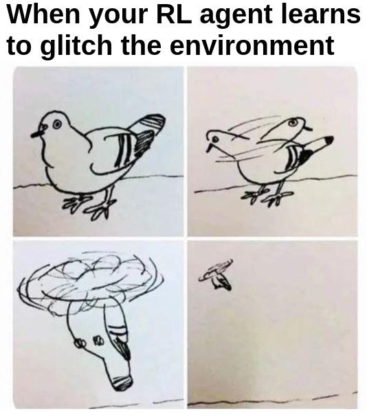
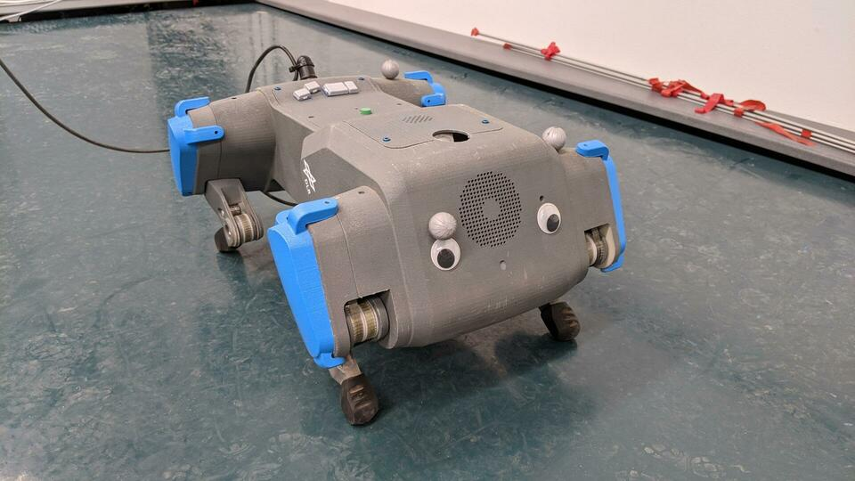
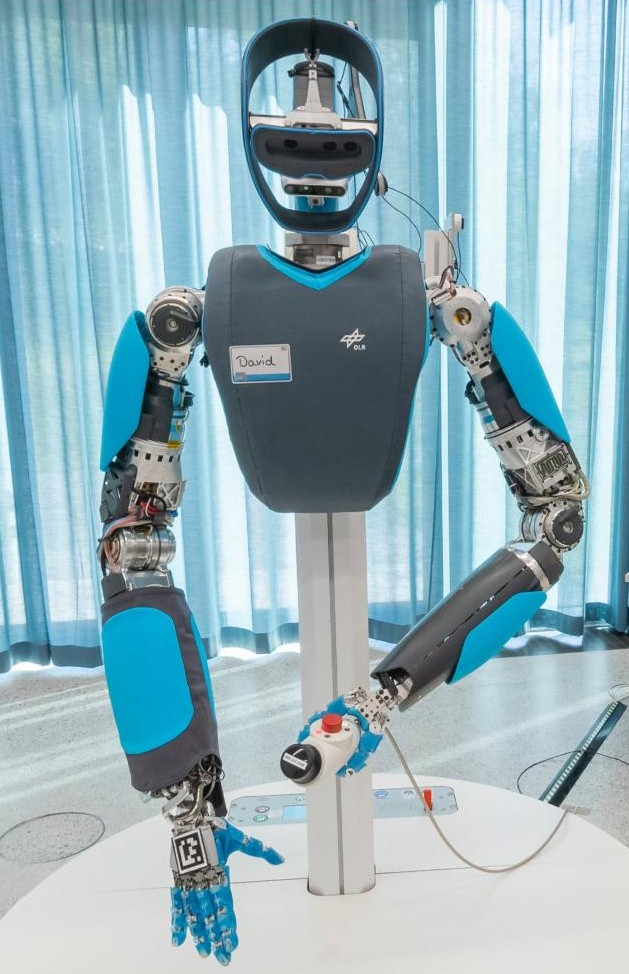

What is this session about?
- Part I: RL Tips and Tricks and Examples on Real Robots
- Part II: Hands-on Session with Stable-Baselines3 (SB3)
Outline
-
RL Tips and Tricks
- General Nuts and Bolts of RL Experimentation
- RL in practice on a custom task
- Questions?
-
The Challenges of Applying RL to Real Robots
- Learning to control an elastic robot
- Learning to drive in minutes and learning to race in hours
- Learning to walk with an elastic quadruped robot
- Questions?
RL Tips And Tricks
1. General Nuts and Bolt of RL Experimentation
RL is Hard (1/2)

Which algorithm is better?
The only difference: the epsilon value to avoid division by zero in the optimizer
(one is eps=1e-7
the other eps=1e-5)
RL is Hard (2/2)
- data collection by the agent itself
- sensitivity to the random seed / hyperparameters
- sample inefficient
- reward function design

Credits: Rishabh Mehrotra (@erishabh)
Best Practices
- quantitative evaluation
- use recommended hyperparameters
- save all experiments parameters
- use the RL zoo
RL in practice on a custom task
Do you need RL?
Do you really need RL?

Defining a custom task
- observation space
- action space
- reward function
- termination conditions
Choosing the observation space
- enough information to solve the task
- do not break Markov assumption
- normalize!
Choosing the Action space
- discrete / continuous
- complexity vs final performance
Continuous action space: Normalize? Normalize!
from gym import spaces
# Unnormalized action spaces only work with algorithms
# that don't directly rely on a Gaussian distribution to define the policy
# (e.g. DDPG or SAC, where their output is rescaled to fit the action space limits)
# LIMITS TOO BIG: in that case, the sampled actions will only have values
# around zero, far away from the limits of the space
action_space = spaces.Box(low=-1000, high=1000, shape=(n_actions,), dtype="float32")
# LIMITS TOO SMALL: in that case, the sampled actions will almost
# always saturate (be greater than the limits)
action_space = spaces.Box(low=-0.02, high=0.02, shape=(n_actions,), dtype="float32")
# BEST PRACTICE: action space is normalized, symmetric
# and has an interval range of two,
# which is usually the same magnitude as the initial standard deviation
# of the Gaussian used to sample actions (unit initial std in SB3)
action_space = spaces.Box(low=-1, high=1, shape=(n_actions,), dtype="float32")
Choosing the reward function
- start with reward shaping
- primary / secondary reward
- normalize!
Termination conditions?
- early stopping
- special treatment needed for timeouts
- should not change the task (reward hacking)
Which algorithm to choose?

It doesn't work!
- did you follow the best practices?
- start simple
- use trusted implementations
- increase budget
- hyperparameter tuning (Optuna)
Recap
- RL is hard
- do you need RL?
- best practices
- task specification
Questions?
2. The Challenges of Applying RL to Real Robots
Why learn directly on real robots?
Simulation is all you need

Credits: Nathan Lambert (@natolambert)
Simulation is all you need (bis)
Why learn directly on real robots?
- simulation is safer, faster
- simulation to reality (sim2real): accurate model and randomization needed
- challenges: robot safety, sample efficiency
Learning to control an elastic robot
Challenges
- hard to model (silicon neck)
- oscillations
- real robot (safety)

Generalized State-Dependent Exploration (gSDE)
Independent Gaussian noise:
\[ \epsilon_t \sim \mathcal{N}(0, \sigma) \]
\[ a_t = \mu(s_t; \theta_{\mu}) + \epsilon_t \]
State dependent exploration:
\[ \theta_{\epsilon} \sim \mathcal{N}(0, \sigma_{\epsilon}) \]
\[ a_t = \mu(s_t; \theta_{\mu}) + \epsilon(s_t; \theta_{\epsilon}) \]
Continuity Cost
- formulation: \[ r_{continuity} = - (a_t - a_{t - 1})^2 \]
- requires a history wrapper
- can be done in the loss function
Task Specification
| Observation Space |
tendon forces, desired pose, current pose |
|---|---|
| Action Space | desired forces (4D) |
| Reward Function |
distance to target / continuity |
| Terminations | success / timeout |
| Algorithm | SAC + gSDE |
Results
Learning to drive in minutes / learning to race in hours
Challenges
- minimal number of sensors (image, speed)
- variability of the scene (light, shadows, other cars, ...)
- oscillations
- limited computing power
- communication delay

Learning a state representation (SRL)

Task Specification
| Observation Space |
latent vector / current speed + history |
|---|---|
| Action Space | steering angle / throttle |
| Reward Function |
speed + smoothness |
| Terminations | crash / timeout |
| Algorithm | SAC / TQC + gSDE |
Results
Learning to walk with an elastic quadruped robot
Challenges
- hardcoded solution possible (CPG) but need tuning / not energy efficient / fast
- robot safety
- manual reset
- communication delay

Task Specification
| Observation Space |
joints positons / torques / imu / gyro + history |
|---|---|
| Action Space | motor positions (6D) |
| Reward Function |
forward distance / walk straight / continuity |
| Terminations | fall / timeout |
| Algorithm | TQC + gSDE |
Results
Recap
simulation is all you need- learning directly on a real robot
- smooth control
- decoupling features extraction from policy learning
Questions?
Coming Next: Hands-on Session with Stable Baselines3
Notebook repo: https://github.com/araffin/rl-handson-rlvs21
Backup slides
Who am I?
Stable-Baselines

David (aka HASy)

ENSTA Robotique

ENSTA Paris
German Aerospace Center (DLR)